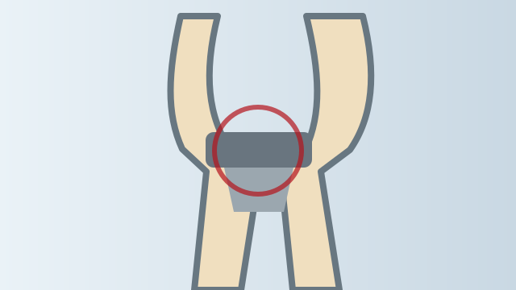
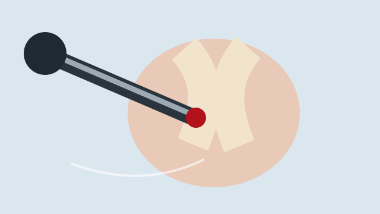
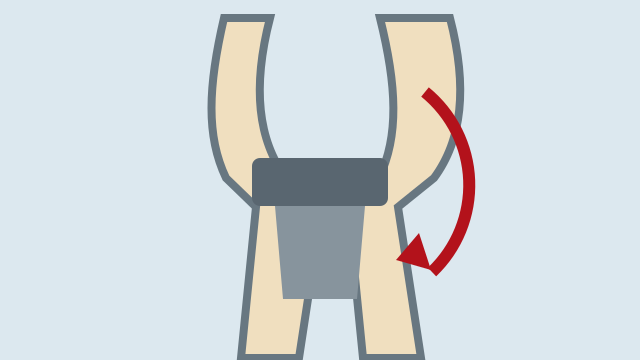
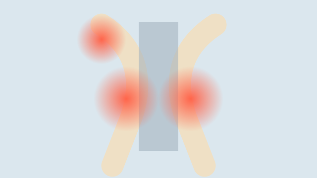
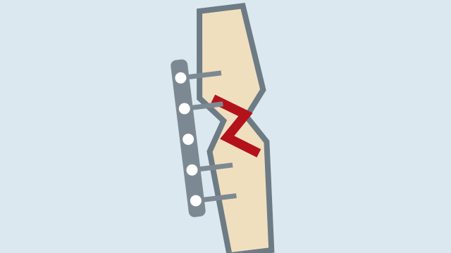
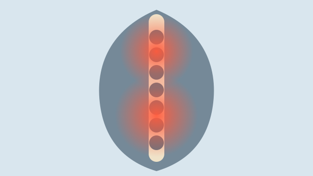

Specialist Orthopaedic Care
Focused evaluation and treatment.
ORTHOPAEDIC · KNEE · SPORTS INJURY · JOINT CARE
Specialist care for knee problems, sports injuries, arthritis, joint replacement and fractures in Salem.
MS Orthopaedics · FNB Arthroplasty
Dharan Hospital, SalemFocused evaluation and treatment.
Treatment planned around individual needs.
Joint replacement and arthroscopy fellowship training.
From diagnosis through recovery.
ABOUT DOCTOR
Dr Arun is trained in joint replacement, arthroscopy and sports medicine, with additional fellowship exposure in robotic hip and knee replacement surgery at Bumin Hospital, Seoul, South Korea.
EXPLORE OUR SERVICES
Select a treatment to read more.






MOVE BETTER · LIVE BETTER
OUR SPECIALIZATIONS
Primary knee and hip replacement care.
ACL, PCL, meniscus, cartilage and shoulder injuries.
Fractures and complex orthopaedic injuries.
Assessment and non-operative care for back and neck pain.
WHY CHOOSE SKOC
Arthroplasty and arthroscopy training with international fellowship exposure.
Knee, sports injuries, joint replacement and trauma.
Options explained clearly before treatment decisions.
Care aimed at safe return to mobility and activity.
FREQUENTLY ASKED QUESTIONS
No. Treatment depends on instability, associated injuries, activity demands and individual goals.
It may be considered when advanced arthritis causes persistent pain and limitation despite appropriate non-operative care.
Yes. Consultation can help confirm the diagnosis, review scans and discuss options.
DOCTOR CONSULTATION
Consultant Orthopaedic Surgeon at Dharan Hospital, Salem.
Salem, Tamil Nadu